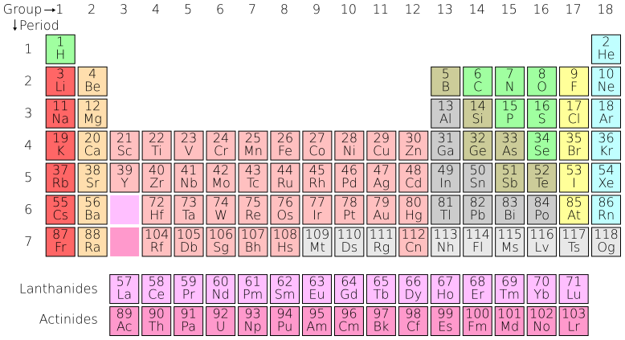

Podstawy: pierwiastki, własności i ich wartość
Najważniejsza dana: 17 liczba pierwiastkow - "The rare earths are a relatively abundant group of 17 elements composed of scandium, yttrium, and the lanthanides." Dla inwestora oznacza to, że wspólna etykieta obejmuje surowce o odmiennych zastosowaniach i wartości ekonomicznej. 2
W skrócie
Ziemie rzadkie, czyli REE od angielskiego rare earth elements, tworzą koszyk 17 pierwiastków o podobnej chemii, lecz bardzo różnej wartości: skandu, itru oraz lantanowców od lantanu do lutetu. Ich ekonomika zależy nie tylko od wydobycia, ale też od separacji, czyli chemicznego rozdzielania pierwiastków, ponieważ kopalnia musi zagospodarować nadmiar ceru i lantanu, aby sprzedać deficytowe Nd, Pr, Dy i Tb. Najwięcej wartości przechwytują właściciele separacji i produkcji magnesów: magnesy trwałe odpowiadają za około 95% wartości konsumpcji REE, a Chiny kontrolowały w 2024 r. 91% produkcji rafinowanej, czyli oczyszczonej, i 94% spiekanych, czyli utrwalanych cieplnie, magnesów, co szerzej opisuje Łańcuch magnesów trwałych NdFeB i SmCo. Presję zwiększa popyt UE na metale ziem rzadkich, który ma wzrosnąć 6-krotnie do 2030 r. i 7-krotnie do 2050 r., podczas gdy istniejące zdolności mają w 2035 r. pokrywać około 50% potrzeb górniczych i poniżej 20% potrzeb w zakresie magnesów. Dla inwestora kluczowy jest więc nie sam dostęp do złoża, lecz pozycja w łańcuchu przetwarzania i odporność na koncentrację podaży opisaną w Geopolityka i koncentracja łańcucha dostaw. 2343

Rycina 16: Układ okresowy pierwiastków z wyodrębnionym wierszem lantanowców, będących rdzeniem grupy metali ziem rzadkich.1
Co obejmuje nazwa „ziemie rzadkie”
USGS, amerykańska służba geologiczna, ujmuje REE jako zbiór 17 pierwiastków: Sc, Y i 15 lantanowców La-Lu, a Eurostat używa handlowej kategorii REE+ obejmującej te same 17 składników, ponieważ dostępne dane nie pozwalają oddzielić lekkich i ciężkich REE od Sc i Y. Ocena surowców krytycznych UE posługuje się jednak grupami 10 ciężkich i 5 lekkich REE, ujmuje skand osobno, a cała lista UE z 2023 r. obejmuje 34 pozycje. IEA nie rozstrzyga statusu Sc i Y w pełnym zbiorze, lecz koncentruje analizę na węższym koszyku magnetycznych REE: Nd, Pr, Dy i Tb. Dla inwestora oznacza to, że przed porównaniem rynku, projektu lub wyceny trzeba najpierw sprawdzić skład analizowanego koszyka. 25663
Lekkie, średnie i ciężkie - granice zależą od autora
LREE oznacza lekkie, MREE średnie, a HREE ciężkie pierwiastki ziem rzadkich. W schemacie geologicznym typu USGS LREE rozciągają się od La o liczbie atomowej 57, czyli o 57 protonach, do Sm o liczbie 62, natomiast HREE od Eu o liczbie 63 do Lu o liczbie 71; Y, mimo liczby atomowej 39, trafia do HREE ze względu na podobieństwo chemiczne. W schemacie przypisywanym IUPAC lekkie lantanowce sięgają do Gd o liczbie atomowej 64, a ciężkie zaczynają się od Tb, przy czym kryterium stanowi obsadzenie podpowłoki 4f. MREE pozostaje przemysłową etykietą środkowego odcinka, ale jego liczbowe granice są NIE UJAWNIONE w przywołanych danych, więc konkurencyjnych podziałów nie da się sprowadzić do jednej porównywalnej definicji. Dla inwestora użyteczniejszy bywa koszyk magnesowy Nd-Pr-Dy-Tb, którego popyt podwoił się od 2015 r., ponieważ lepiej wskazuje rzeczywiste źródło presji popytowej. 783
Chemia 4f i koszt separacji
Podpowłoka 4f to wewnętrzny obszar atomu, w którym zmienia się obsada elektronów kolejnych lantanowców, podczas gdy ich elektrony zewnętrzne pozostają podobne. Skurcz lantanowców oznacza stopniowe zmniejszanie rozmiaru jonów w szeregu La-Lu, dlatego różnice chemiczne są regularne, lecz niewielkie, a mieszaninę trzeba rozdzielać w wielu kolejnych selektywnych etapach. Ta właściwość przekształca rudę wielopierwiastkową w kosztowny problem separacyjny i premiuje podmioty dysponujące technologią oraz skalą, co rozwija Separacja, rafinacja i metalurgia. 89
Pierwiastek nie jest rynkiem - mapa zastosowań
Nd i Pr są podstawą magnesów NdFeB, czyli neodymowo-żelazowo-borowych, ponad 12 razy silniejszych od konwencjonalnych magnesów żelaznych, a Dy i Tb poprawiają ich pracę w wymagających warunkach. Sm tworzy magnesy SmCo, czyli samarium-kobalt, pracujące do 350°C, czyli stopni Celsjusza. Znaczenie tych materiałów pokazuje pojazd hybrydowo-elektryczny, który może zawierać ponad 40 silników i siłowników elektrycznych z REE. Dla inwestora rosnące znaczenie elektryfikacji premiuje dostawców pierwiastków magnesowych i producentów wyspecjalizowanych magnesów, a zależności popytowe rozwija Popyt i zastosowania końcowe. 101112
Poza magnesami Eu, Tb i Y działają w luminoforach, czyli materiałach zamieniających energię w światło, a amerykańskie oświetlenie fluorescencyjne zużywało ponad 1000 ton metrycznych tlenków REE rocznie. Ce znajduje zastosowanie w polerowaniu i katalizatorach, natomiast La w krakingu fluidalnym FCC, czyli rafineryjnym rozbijaniu ciężkich cząsteczek, oraz w akumulatorach niklowo-wodorkowych NiMH. Taka różnorodność zastosowań stabilizuje część popytu, ale nie usuwa różnic wartości między poszczególnymi pierwiastkami. 129
Jeszcze inne nisze tworzą Gd, będący składnikiem kontrastu w rezonansie magnetycznym MRI, którego szacowane zastosowanie obejmuje około 30 mln badań rocznie, oraz Er, wzmacniający sygnał w światłowodach w oknie 1.55 mikrometra, czyli milionowej części metra; Yb jest z kolei domieszką laserów światłowodowych. Sc wzmacnia lekkie stopy Al-Sc, czyli aluminium-skand, a jego orientacyjne ceny wynoszą 1200 USD/kg, czyli dolarów amerykańskich za kilogram Sc2O3, i 3300 USD/kg metalu. Dla inwestora są to rynki wyspecjalizowane, w których potencjalnie wysoka wartość jednostkowa idzie w parze z większym ryzykiem jakości danych i płynności. 131415
Balance problem - złoże nie odpowiada popytowi
Balance problem, czyli problem bilansu pierwiastkowego, wynika z tego, że REE wydobywa się w proporcjach narzuconych przez złoże. Typowy bastnazyt daje około 50% Ce, 25% La i 17% Nd, więc sprzedaż rosnącego strumienia Nd wymusza zagospodarowanie jeszcze większych strumieni Ce i La, tworząc ich strukturalną nadwyżkę względem pierwiastków magnesowych. Jednocześnie wąskim gardłem popytu pozostają Nd, Pr, Dy i Tb, dlatego sama wielkość zasobu nie przesądza o atrakcyjności projektu. 163
Napięcie między składem złoża a strukturą popytu widać w prognozie Adamas, która na 2030 r. wskazywała deficyt 16000 ton tlenków Nd, Pr i didymu, czyli mieszaniny Nd-Pr. W grudniu 2024 r. dolne granice cen wynosiły 55 USD/kg NdPr, 220 USD/kg Dy i 770 USD/kg Tb. Przychód trzeba zatem modelować pierwiastek po pierwiastku, a nie jedną „ceną REE”, ponieważ wynik projektu może zależeć od niewielkiej części całego strumienia produktu. 1718
Obfitość nie usuwa krytyczności
Ce występuje w skorupie na poziomie 60 ppm, czyli części na milion, i zajmuje 25. miejsce pod względem obfitości, podczas gdy Tm i Lu mają około 0.5 ppm; dla porównania Cu ma około 27 ppm w skorupie kontynentalnej, więc Ce jest pospolitszy od miedzi. Krytyczność nie opisuje jednak samej obecności pierwiastka w skale, lecz koszt uzyskania produktu i koncentrację łańcucha: Chiny odpowiadały w 2024 r. za 60% wydobycia magnetycznych REE, 91% rafinacji i 94% spiekanych magnesów. Dla inwestora głównym ryzykiem jest więc zdolność przetworzenia i dostarczenia materiału, a nie geologiczna rzadkość. 2193
Od rudy do magnesu - język produktu
Łańcuch biegnie od rudy przez koncentrat i rozdzielone tlenki do metalu lub mischmetalu, a następnie stopu i magnesu. Koncentrat jest materiałem wzbogaconym w minerały REE, natomiast mischmetal to handlowa mieszanina metali, typowo zawierająca około 55% Ce, 25% La i 15% Nd. Już na poziomie nazwy produktu zmienia się więc to, co faktycznie można sprzedać i wycenić. 20
REO oznacza rare earth oxide, czyli tlenek REE lub tonaż przeliczony na jego ekwiwalent, a TREO sumę wszystkich tlenków REE. Zasób Mt Weld wynosi 106.6 mln ton przy 4.12% TREO, podczas gdy światowe wydobycie w 2024 r. raportowano jako 390000 ton ekwiwalentu REO. Dla inwestora zestawienie zasobu z produkcją ma sens dopiero po ujednoliceniu bazy masy i etapu łańcucha. 2122
Nie są to jeszcze tony metalu ani magnesu: MP Materials podał za 2024 r. 45455 ton REO w koncentracie, lecz 1294 tony tlenku NdPr. Każdy etap zmienia czystość, skład i bazę masy, dlatego ekwiwalentu REO lub TREO nie wolno bez przeliczenia porównywać z ekwiwalentem metalu, stopem ani masą magnesu. Pominięcie tych różnic może sztucznie zawyżyć skalę projektu lub zniekształcić jego ekonomikę. 23
xychart-beta title "Ceny tlenków REE XII 2024 (USD/kg)" x-axis ["NdPr", "Dysproz", "Terb"] y-axis "USD/kg" bar [55, 220, 770]
Rycina 1: Ceny tlenków NdPr, dysprozu i terbu, grudzień 2024 (USD/kg).
Kontrowersje
Czy Sc i Y wliczać do REE
Szerokie ujęcie ma oparcie instytucjonalne, ponieważ USGS i Eurostat liczą 17 pierwiastków, czyli 15 lantanowców plus Sc i Y. Ujęcie funkcjonalne rozdziela jednak koszyki: UE operuje 10 HREE i 5 LREE, ujmuje Sc osobno na liście 34 surowców krytycznych, a Y o liczbie atomowej 39 grupuje z HREE. IEA wymienia z kolei magnetyczne REE Nd, Pr, Dy i Tb, lecz nie oznacza to geologicznego wyłączenia Sc lub Y. Dla inwestora spór ma znaczenie praktyczne, bo wybór definicji może zmienić zakres porównywanych danych bez zmiany samego rynku. 257663
Gdzie przebiega granica LREE-HREE
Schemat typu USGS stawia granicę między Sm o liczbie atomowej 62 a Eu o liczbie 63 i zalicza Y o liczbie 39 do HREE. Konkurencyjny schemat przypisywany IUPAC włącza do LREE także Gd o liczbie atomowej 64, a HREE zaczyna od Tb według obsadzenia 4f. Przemysłowa kategoria MREE dodatkowo wydziela środek, ale jej granice liczbowe są NIE UJAWNIONE w tych danych. Granic nie należy więc uśredniać, a przy każdej tabeli trzeba podać skład koszyka, aby uniknąć pozornych różnic w podaży i popycie. 7878
REO kontra metal
Zwolennicy bazy tlenkowej wskazują, że REO i TREO opisują zasób, koncentrat i tlenki, czego przykładem jest raportowanie przez MP 45455 ton REO w koncentracie i 1294 ton tlenku NdPr. Baza metalu ma jednak inny skład masy i cenę: dla Sc orientacyjnie Sc2O3 kosztuje 1200 USD/kg, a czysty metal 3300 USD/kg. Zestawienie ton REO z tonami metalu bez współczynnika konwersji tworzy pozorną różnicę podaży lub ceny i może prowadzić do błędnej wyceny skali działalności. 2315
„Rzadkie” kontra „krytyczne”
Geologiczne odczytanie nazwy jest mylące, ponieważ Ce ma 60 ppm, Cu około 27 ppm, a Tm i Lu po około 0.5 ppm. Polityczne ramowanie krytyczności ma jednak mierzalną podstawę: 60% wydobycia magnetycznych REE, 91% rafinacji i 94% spiekanych magnesów przypadało w 2024 r. na Chiny. Pierwsze ujęcie opisuje obfitość atomów w skale, a drugie zdolność dostarczenia produktu, więc dla inwestora są to różne źródła ryzyka, a nie sprzeczne pomiary. 2193
Spółki powiązane
- NioCorp Developments (NB, NASDAQ) - profil lite
Źródła
- ilustracja - https://commons.wikimedia.org/wiki/File:Periodic_table.svg
- USGS - https://www.usgs.gov/centers/national-minerals-information-center/rare-earths-statistics-and-information
- IEA - https://www.iea.org/reports/rare-earth-elements/executive-summary
- Komisja Europejska - https://single-market-economy.ec.europa.eu/sectors/raw-materials/areas-specific-interest/critical-raw-materials/critical-raw-materials-act_en
- Eurostat - https://ec.europa.eu/eurostat/statistics-explained/index.php?title=International_trade_in_critical_raw_materials
- Komisja Europejska - https://www.greenpolicyplatform.org/sites/default/files/downloads/resource/study%20on%20the%20critical%20raw%20materials%20for%20the%20eu%202023-ET0723116ENN.pdf
- Geological Society of London - https://www.geolsoc.org.uk/media/fv3hk3b0/rare-earth-elements-briefing-note-final-new-format.pdf
- ScienceDirect - https://www.sciencedirect.com/topics/earth-and-planetary-sciences/rare-earth-element
- USGS - https://pubs.usgs.gov/fs/2002/fs087-02/
- USITC - https://www.usitc.gov/publications/332/working_papers/rare_earths_and_the_electronics_sector_final_070921_2-compliant.pdf
- Eclipse Magnetics - https://www.eclipsemagnetics.com/products/magnetic-materials-and-assemblies/magnet-materials/samarium-cobalt-magnet-material/
- LLNL - https://str.llnl.gov/past-issues/aprilmay-2016/reducing-reliance-critical-materials
- Castellano - https://drrobertcastellano.substack.com/p/why-gadolinium-is-the-hidden-frontline
- Versitron - https://www.versitron.com/blogs/post/what-is-edfa-how-it-works-and-why-they-matters
- Lanthanides.io - https://www.lanthanides.io/elements/Sc/
- The State of Competition - https://tscsw.substack.com/p/dont-ignore-rare-earths
- Adamas Intelligence - https://www.moanaminerals.com/hubfs/Media/Market-Analysis/Adamas-Intelligence-Rare-Earths-Small-Market-Big-Necessity-Q2-2019.pdf
- Fastmarkets - https://www.fastmarkets.com/insights/what-will-happen-to-rare-earth-markets-in-2025/
- Geology Science - https://periodic-table.rsc.org/element/29/copper
- Wikipedia - https://en.wikipedia.org/wiki/Mischmetal
- Lynas - https://announcements.asx.com.au/asxpdf/20241011/pdf/068zp9wqw6v5dc.pdf
- Farmonaut - https://farmonaut.com/mining/usgs-mineral-commodity-summaries-rare-earths-2025-guide
- MP Materials - https://mpmaterials.com/news/mp-materials-reports-fourth-quarter-and-full-year-2024-results/